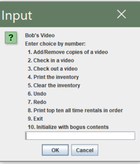
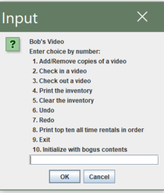

Guess the Sneaker Android App
Languages Used: Java
IDE/Applications Used: Android Studio
- Android App game on the Google Play Store where User has to guess the correct model and colorway of a shoe when presented.
- Approximately over 67k total downloads and a 4.1 star rating.
- The project was originally the final project for one of my classes, but I continued to work on it after graduation to improve it.
- Some updates that I have added: answers section, functionality to change settings, and increased the number of shoes to guess from.

Link to Github repository
 
